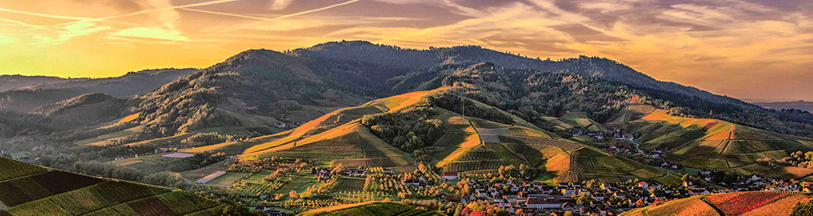

Weather Summary
Currently:
Sunny
High:
76℉
Wind Chill:
℉
Humidity:
69
Wind Speed:
5 mph
5 Day Forecast
Founder's Day Fresco
by Janica Juarez
I was recently reflecting upon the founders day event held at Foundation Park each year. I have been taking the festival for granted and have not been properly engaging in perhaps the most popular community event of the year. In response, I contacted Ms. Sharon via email and expressed my desire to serve on the event committee. Well, you guessed it, the hone rings almost immediately and she promptly asks me to be the vent committee chair. Literally, good grief! My appreciation for the years of dedicated, generous service of volunteers and sponsors has escalated beyond what I thought I could feel for such a thing and … link continue to full article